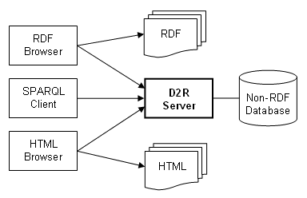
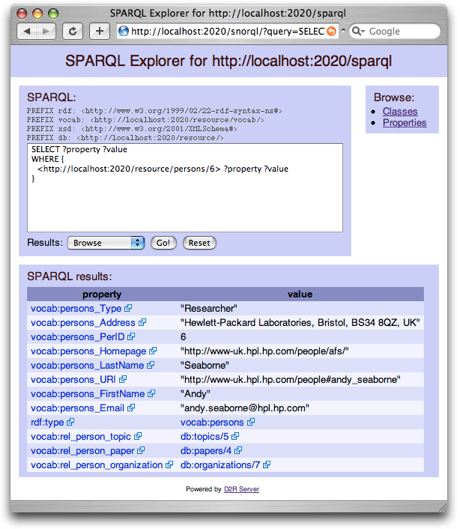

D2R Server is a tool for publishing relational databases on the Semantic Web.
The server enables RDF and HTML browsers to navigate the content of
non-RDF databases,
and allows applications to query the database using the SPARQL query language.
Download D2R Server
v0.3.1 (alpha), released 2006-10-30News
- 2006-10-30: Version 0.3.1 fixes several bugs, improves database compatibility, and defaults to D2RQ's FastPath query handler.
- 2006-10-11: Second public D2R Server! There is a D2R Server running at http://roller.blogdns.net:2020/ which exports blog posts from a Roller Blog Server using the AtomOWL vocabulary. See SPARQLing Roller for details.
- 2006-10-02: D2R Server will be presented at ISWC 2006. There will be a poster presentation about D2R Server at ISWC 2006 in Athens, GA. Download poster abstract D2R Server - Publishing Relational Databases on the Semantic Web.
- 2006-09-08: D2R Server Live Demo. We have a D2R Server running at http://www3.wiwiss.fu-berlin.de:2020/ which you can use to browse and query the ISWC example database.
- 2006-09-05: Version 0.3 released. The new version enables database-generated URIs to be dereferenced. The server supports content-negotiation and serves RDF and XHTML representations of resources.
- 2006-06-01: Version 0.2.1 fixes Java 1.4 compatibility issue.
- 2006-05-30: Version 0.2 released, including a script for auto-generating mapping files from DB schemas, and a web-based SPARQL browser for exploring the mapped data.
- 2006-05-25: D2R Server Demo at the 15th World Wide Web Conference (WWW2006); slides: D2R Server presentation (PDF)
Contents
- Introduction
- Accessing a Database with an RDF Browser
- Accessing a Database with an HTML Browser
- Querying a Database with a SPARQL Client
- Mapping a Relational Database to RDF
- Installing and running D2R Server
- Pre-built mapping files
- Support and Feedback
- Source code and development
1. Introduction
The Semantic Web is a global information space consisting of inter-linked data about resources. There are two access paradigms to the Semantic Web: browsing and searching. Using a Semantic Web browser like Tabulator (slides), a surfer can follow links from data about one resource to data about other resources. The second access paradigm is searching. Using the SPARQL query language and protocol, a client application can query data-sources for information about resources.
D2R Server is a tool for publishing the content of relational databases on the Semantic Web. Database content is mapped to RDF by a customizable mapping which specifies how resources are identified and which properties are used to describe resources. Based on this mapping, D2R Server allows a RDF representation of the database to be browsed and searched. The server provides two interfaces: The dereferencing interface allows instance and vocabulary URIs to be dereferenced over the HTTP protocol. The interface supports content-negotiation and serves RDF and XHTML representations of resources. The generated representations are richly interlinked on RDF and XHTML level in order to enable browsers and crawlers to navigate database content. The SPARQL interface enables applications to query the database using the SPARQL query language over the SPARQL protocol.

The server takes requests from the Web and rewrites them via a D2RQ mapping into SQL queries against a relational database. This on-the-fly translation allows clients to access the content of large databases without having to replicate them into RDF.
2. Accessing a Database with an RDF Browser
RDF browsers retrieve data from the Semantic Web by dereferencing instance and vocabulary URIs and by following rdfs:seeAlso links within the data. The screenshot below shows an example database being browsed with the Tabulator RDF browser.
{kind=link}
2.1 Dereferencing URIs Identifying Database Content
D2R Server allows database-generated URIs to be dereferenced. The HTTP request below, sent to the server http://www3.wiwiss.fu-berlin.de:2020, requests an RDF representation of the resource http://www3.wiwiss.fu-berlin.de:2020/resource/persons/6. Note that the request asks for content type application/rdf+xml.
GET /resource/Persons/6 HTTP/1.0 Accept: application/rdf+xml
According to the httpRange-14 TAG finding, only information resources (i.e. documents) can have representations served on the Web over HTTP. When URIs that identify other kinds of resources, such as a person, are dereferenced, then the HTTP response must be a 303 redirect to a second URI. At that location, a document describing the real-world resource (i.e. person) is served. D2R Server implements this behavior and will answer the request above with an HTTP response like this:
HTTP/1.1 303 See Other Location: http://www3.wiwiss.fu-berlin.de:2020/sparql?query=DESCRIBE+%3Chttp%3A%2F%... Connection: close
The client has to perform a second HTTP GET request on the Location URI. D2R Server will respond now with an RDF/XML document containing an RDF/XML description of the person:
<rdf:RDF
xml:base="http://www3.wiwiss.fu-berlin.de:2020/"
xmlns:foaf="http://xmlns.com/foaf/0.1/"
xmlns:iswc="http://annotation.semanticweb.org/iswc/iswc.daml#"
xmlns:rdf="http://www.w3.org/1999/02/22-rdf-syntax-ns#"
xmlns:rdfs="http://www.w3.org/2000/01/rdf-schema#"
xmlns:dc="http://purl.org/dc/elements/1.1/">
<foaf:Person rdf:about="resource/persons/6">
<rdf:type rdf:resource="http://annotation.semanticweb.org/iswc/iswc.daml#Researcher"/>
<foaf:name>Andy Seaborne</foaf:name>
<rdfs:label>Andy Seaborne</rdfs:label>
<iswc:research_interests rdf:resource="resource/topics/5"/>
<foaf:homepage rdf:resource="http://www-uk.hpl.hp.com/people/afs/"/>
<iswc:address>Hewlett-Packard Laboratories, Bristol, BS34 8QZ, UK</iswc:address>
<iswc:has_affiliation rdf:resource="resource/organizations/7"/>
<foaf:mbox rdf:resource="mailto:andy.seaborne@hpl.hp.com"/>
<rdfs:seeAlso rdf:resource="all/Persons"/>
</foaf:Person>
<rdf:Description rdf:about="resource/papers/4">
<dc:creator rdf:resource="resource/persons/6"/>
</rdf:Description>
</rdf:RDF>
The description is generated on the fly from the content of the database. Note that the response contains URIs of related resources such as papers and topics. Descriptions of these can be retrieved in the same way. Beside of triples having resource/persons/6 as subject (out-arcs), the representation also contains triples having resource/persons/6 as object (in-arcs). Within our example, this enables RDF browsers to follow the link from Andy to his paper resource/papers/4. There is also an rdfs:seeAlso link to http://www3.wiwiss.fu-berlin.de:2020/all/Persons. This is an RDF/XML list of all persons stored in the database. Parts of it are shown below. By following these links, RDF browsers and RDF crawlers can access the complete content of the database.
<rdf:RDF
xml:base="http://www3.wiwiss.fu-berlin.de:2020/"
xmlns:rdf="http://www.w3.org/1999/02/22-rdf-syntax-ns#"
xmlns:rdfs="http://www.w3.org/2000/01/rdf-schema#">
<rdf:Description rdf:about="http://www3.wiwiss.fu-berlin.de:2020/all/Persons">
<rdfs:label>List of all instances: Persons</rdfs:label>
<rdfs:seeAlso rdf:resource="resource/persons/1"/>
<rdfs:seeAlso rdf:resource="resource/persons/2"/>
<rdfs:seeAlso rdf:resource="resource/persons/3"/>
[...]
<rdfs:seeAlso rdf:resource="all"/>
</rdf:Description>
<rdf:Description rdf:about="resource/persons/1">
<rdf:type rdf:resource="http://xmlns.com/foaf/0.1/Person"/>
<rdf:type rdf:resource="http://annotation.semanticweb.org/iswc/iswc.daml#Full_Professor"/>
<rdfs:label>Yolanda Gil</rdfs:label>
</rdf:Description>
<rdf:Description rdf:about="resource/persons/2">
<rdf:type rdf:resource="http://xmlns.com/foaf/0.1/Person"/>
<rdfs:label>Varun Ratnakar</rdfs:label>
</rdf:Description>
<rdf:Description rdf:about="resource/persons/3">
<rdf:type rdf:resource="http://xmlns.com/foaf/0.1/Person"/>
<rdf:type rdf:resource="http://annotation.semanticweb.org/iswc/iswc.daml#Researcher"/>
<rdfs:label>Jim Blythe</rdfs:label>
</rdf:Description>
[...]
<rdf:Description rdf:about="all">
<rdfs:label>D2R Server contents</rdfs:label>
</rdf:Description>
</rdf:RDF>
Beside of pure rdfs:seeAlso links, the list also contains rdf:type and rdfs:label statements for each referenced resource. This leaves a breadcrumb trail to help browsers decide which links to follow.
2.2 Dereferencing External URIs
The database may also contain information about resources whose URIs are outside the server's namespace. When the server generates output that mentions such a resource, it adds an rdfs:seeAlso statement to the resource pointing at an RDF/XML document that contains all information from within the database about the external resource. By dereferencing the external URI and by following the rdf:seeAlso link, an RDF browser can retrieve both authoritative as well as non-authoritative information about the resource.
2.3 Referring to Database Content from other Web Documents
You can use D2R Server's database-generated URIs to refer to database content from other Web documents. For instance, you could use the URI http://www3.wiwiss.fu-berlin.de:2020/resource/persons/6 in a FOAF knows statement within your FOAF profile to refer to Andy Seaborne. By dereferencing the URI, an RDF browser can then navigate from your FOAF profile to information about Andy in the database.
<rdf:Description rdf:about="http://www.bizer.de#chris">
<foaf:name>Chris Bizer</foaf:name>
<foaf:knows rdf:resource="http://www3.wiwiss.fu-berlin.de:2020/resource/persons/6"/>
<foaf:knows rdf:resource="http://danbri.org/foaf#danbri"/>
</rdf:Description>
In the case that a person has already assigned a different URI to itself, for instance http://www.w3.org/People/Berners-Lee/card#i, you should use this URI in the FOAF knows statement and set a link to the database content about the person by adding an rdfs:seeAlso statement your FOAF profile. The object of this statement should be a SPARQL describe query against D2R Server's SPARQL endpoint, for instance DESCRIBE <http://www.w3.org/People/Berners-Lee/card#i>:
<rdf:Description rdf:about="http://www.bizer.de#chris">
<foaf:name>Chris Bizer</foaf:name>
<foaf:knows>
<rdf:Description rdf:about="http://www.w3.org/People/Berners-Lee/card#i">
<foaf:name>Tim Berners-Lee</foaf:name> <rdfs:seeAlso rdf:resource="http://www3.wiwiss.fu-berlin.de:2020/sparql?query=DESCRIBE+
%3Chttp%3A%2A%2Awww.w3.org%2APeople%2ABerners-Lee%2Acard%23i%3E"/> </rdf:Description> </foaf:knows>
</rdf:Description>
3. Accessing a Database with an HTML Browser
D2R Server can generate XHTML representations of the resources within the database. These representations are retrieved by dereferencing the resource URI with a HTTP request that asks for HTML (content type text/html) or XHTML (application/xhtml+xml).
GET /resource/persons/4 HTTP/1.0 Accept: text/html
Like in the application/rdf+xml case, D2R Server will redirect to a document describing the resource, but this time an XHTML page:
The representation contains navigation links (Home | All Persons) that allow the complete content of the database to be browsed.
The <head> section of the HTML page contains a <link rel="alternate" /> tag pointing to the resource's RDF representation. This allows tools like Piggy Bank to switch between the HTML and RDF views.
All pages are rendered from Velocity templates to allow customization. Future version of D2R Server might employ Fresnel lenses to improve resource display.
4. Querying a Database with a SPARQL Client
D2R Server provides a SPARQL endpoint for querying the database using the SPARQL query language over the SPARQL protocol. The endpoint URI is http://www3.wiwiss.fu-berlin.de:2020/sparql. Results can be retrieved in the SPARQL Query Result XML Format and the SPARQL/JSON serialization.
Example SPARQL Query:
SELECT ?title ?authorName WHERE {
?paper dc:title ?title .
?paper skos:subject [ skos:prefLabel "Semantic Web" ] .
?paper dc:creator ?author .
?author foaf:name ?authorName .
?paper dc:date ?date .
} ORDER BY ?date LIMIT 3
Response in SPARQL XML Result Format:
<sparql
xmlns:rdf="http://www.w3.org/1999/02/22-rdf-syntax-ns#"
xmlns:xs="http://www.w3.org/2001/XMLSchema#"
xmlns="http://www.w3.org/2005/sparql-results#" >
<head>
<variable name="title"/>
<variable name="authorName"/>
</head>
<results ordered="true" distinct="false">
<result>
<binding name="title">
<literal>Automatic Generation of Java/SQL based Inference Engines from RDF Schema and RuleML</literal>
</binding>
<binding name="authorName">
<literal>Andreas Eberhart</literal>
</binding>
</result>
<result>
<binding name="title">
<literal>Trusting Information Sources One Citizen at a Time</literal>
</binding>
<binding name="authorName">
<literal>Varun Ratnakar</literal>
</binding>
</result>
<result>
<binding name="title">
<literal>Trusting Information Sources One Citizen at a Time</literal>
</binding>
<binding name="authorName">
<literal>Yolanda Gil</literal>
</binding>
</result>
</results>
</sparql>
5. Mapping a Relational Database to RDF
D2R Server uses the D2RQ Mapping Language to map the content of a relational database to RDF. A D2RQ mapping specifies how resources are identified and which properties are used to describe the resources.
D2R Server includes a tool that automatically generates a D2RQ mapping from the table structure of a database. The tool generates a new RDF vocabulary for each database, using table names as class names and column names as property names.
In order to enable Semantic Web client applications to understand as much of your data as possible, you should use well-known and publicly accessible RDF vocabularies to describe your data. Therefore, you should customize your mapping file and replace the auto-generated terms with terms from these RDF vocabularies.
6. Installing and running D2R Server
You need:
- Java 1.4 or newer on the path (check with java -version if you're not sure),
- A supported database. D2R Server works with Oracle, MySQL, PostgreSQL, and any SQL-92 compatible database. Microsoft Access can be used with some restrictions. More information is available in the D2RQ manual.
- a modern browser like Firefox, Opera or Safari for using D2R Server's AJAX SPARQL client. Internet Explorer will currently not work. The XHTML resource representations work with all browsers.
What to do:
Download and extract the archive into a suitable location.
Download a JDBC driver from your database vendor. Place the driver's JAR file into D2R Server's /lib directory. A list of JDBC drivers from different vendors is maintained by Sun. Also take note of the driver class name (e.g. org.postgresql.Driver for PostgreSQL or oracle.jdbc.driver.OracleDriver for Oracle) and JDBC URL pattern (e.g. jdbc:mysql://servername/database for MySQL) from the driver's documentation. A driver for MySQL is already included with D2R Server.
Generate a mapping file for your database schema. Change into the D2R Server directory and run:
generate-mapping -o mapping.n3 -d driver.class.name -u db-user -p db-password jdbc:url:...Replace the parts in italics with appropriate values. mapping.n3 is the name for the new mapping file. -d can be skipped for MySQL.
Start the server:
d2r-server mapping.n3
The SPARQL endpoint is at http://localhost:2020/sparql and can now be queried by any SPARQL client.
The server can be started with the -p <port> option to run it on a port other than the default 2020, and with the -b <baseURI> option if the server's name is different from localhost:
d2r-server -p 80 -b http://www3.wiwiss.fu-berlin.de:2020/ mapping.n3
-
Testing the Server: Open http://localhost:2020/ in a web browser.

You can browse the database content or use the SPARQL Explorer to execute queries and display results in a number of formats.
To test the data in an RDF browser, open any resource URI in Tabulator. You may have to tweak your Firefox settings first – see the Tabulator help.
Customize the database-to-RDF mapping by editing the mapping file with a text editor. Its syntax is described in the D2RQ Manual. D2R Server will automatically detect changes to the mapping file and reload appropriately when you hit the browser's refresh button.
7. Pre-built mapping files
We collect mapping files for popular database-driven applications.
Have another one? Please share it.
8. Support and feedback
You can contact us on the D2RQ mailing list at d2rq-map-devel@lists.sourceforge.net.
9. Source code and development
D2R Server combines the D2RQ API, the Joseki SPARQL Server and the Jetty webserver.
D2R Server is hosted by SourceForge.net as part of the D2RQ project. The latest source code is available from the project's CVS repository and can be browsed online.
10. Related projects
- Other active projects providing SPARQL access to relational databases are
- SquirrelRDF. In addition to relational databases, SquirrelRDF also supports access to LDAP directories.
- Virtuoso which seems to use pretty smart rewriting algorithms and also supports Named Graphs.
- A list of other projects and publications about database to RDF mapping is maintained at the ESW Wiki.
- List of our other open source projects @ Freie Universität Berlin